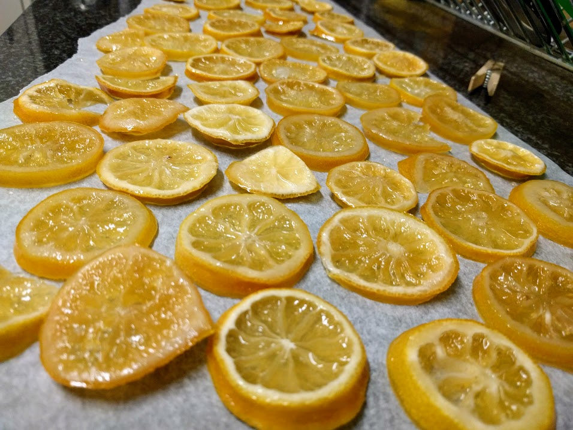

Oranges confites

Illustration avec des citrons
Pour une trentaine de grosses orangettes :
- 4 oranges bio (ou au moins, non traitées)
- 450g de sucre
- (facultatif, mais sacrément conseillé) 200g de chocolat noir pâtissier
- Brosser les oranges sous l'eau, puis les faire blanchir dans une casserole d'eau bouillante ; compter 8 minutes après ébullition. Jeter l'eau de cuisson, et poser les oranges quelque part pour qu'elles refroidissent un peu.
- Mettre à chauffer le sucre, avec son poids en eau. Bien mélanger, il faut que tout le sucre se dissolve et que ça frémisse.
- Dès que ça devient possible, enlever les pôles des oranges, gratter la pulpe si il y en a et l'ajouter au sirop. Puis, découper les oranges en tranches d'un demi-centimètre d'épaisseur (ça paraît gros, c'est normal).
- Mettre (délicatement) les oranges dans l'eau bouillante, et chauffer jusqu'à ce qu'il y ait un léger bouillonnement. Il faut qu'on voie l'eau bouger, à la limite quelques bulles, mais pas plus. C'est important. On ne veut pas que ça fasse du caramel.
- Laisser frémir comme ça un quart d'heure, puis éteindre le feu une demi-heure. Puis, recommencer le processus quatre ou cinq fois, en mélangeant doucement de temps en temps. Oui oui. C'est long. Les oranges confites, ça se mérite.
- Préchauffer le four à 100°C. Sortir les oranges du sirop, puis les éponger avec du papier absorbant, et enfourner après les avoir posées sur une grille. Les laisser sécher pendant une heure et demie, puis éteindre le four et les laisser comme ça pendant une nuit.
- Le lendemain, faire fondre le chocolat (au bain-marie, pour ne rien risquer, mais tu peux le faire directement dans une casserole si t'es un peu foufou), et tremper les orangettes à moitié dedans.
Remarque : comme le titre de la recette l'indique, c'est aussi possible de faire ça avec des citrons. Je conseillerais de ne faire subir que quatre, maximum cinq cycles de cuisson et repos, et de mettre du chocolat sur plus que la moitié des tranches obtenues, parce que ça devient plus rapidement amer.